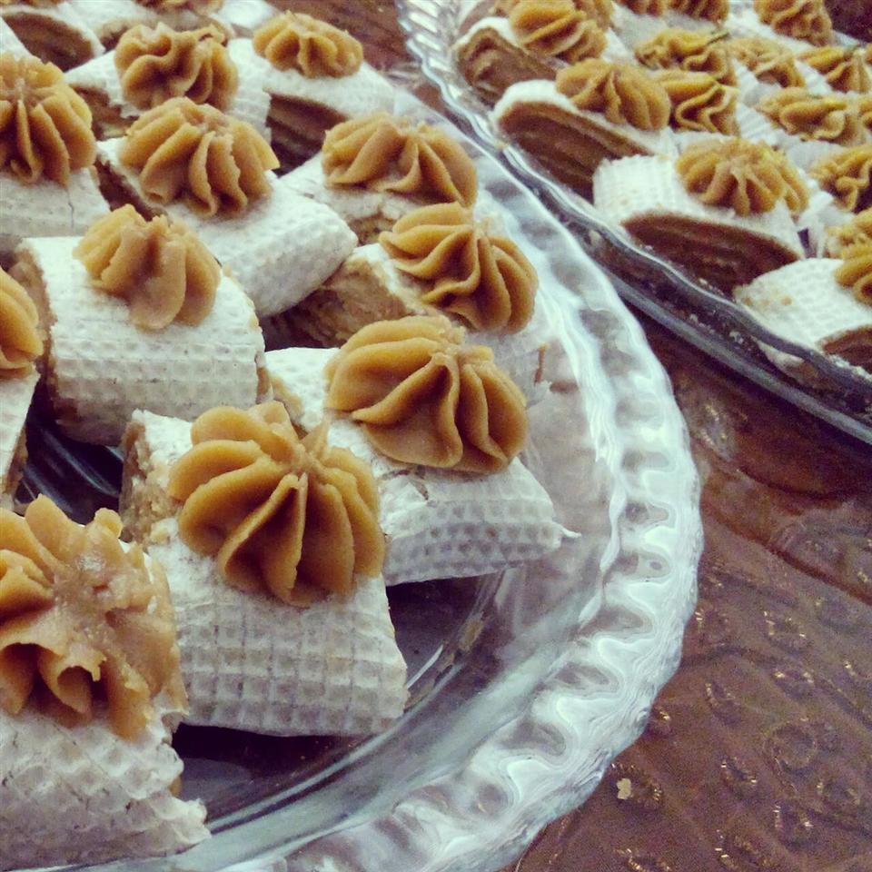

Persian Halva

Description
Halva is a favorite dessert throughout the Middle East. Many varieties are made with tahini or semolina flour.
This Persian version uses a simple mixture of flour, butter, and sugar with the sweet perfume of rosewater. Cut into wedges and serve with tea or coffee.
Ingredients
- 1 cup white sugar
- ½ cup water
- ¼ cup rose water
- 3 saffron threads
- 1 cup unsalted butter
- 1 ½ cups all-purpose flour
Directions
- Bring sugar and water to a boil in a saucepan; cook, stirring constantly, until sugar is dissolved, about 5 minutes.
Stir rose water and saffron into the sugar mixture; cover saucepan and remove from heat.
- Melt butter in a large saucepan over low heat; stir flour into the melted butter until mixture is a smooth paste.
Continue to cook, stirring often, until paste turns golden, about 5 to 10 more minutes.
- Slowly whisk sugar mixture into paste until smooth. Remove saucepan from heat and spread halva evenly onto a plate or platter.
Make a pattern on the top of halva using the back of a spoon or a knife. Cover with plastic wrap and refrigerate until set, at least 1 hour.
- Enjoy! ^‿^
Cook's Notes
Substitute 1 cup of flavorless vegetable oil for the butter to make a cholesterol-free sweet. Decorate the top of the halva with whole pistachios or almonds or simply sprinkle with chopped nuts. Rosewater is available at most Middle-Eastern stores and at many health food stores.
Nutrition Facts
Per serving:
- 386 calories
- protein 2.7g
- carbohydrates 42.9g
- fat 23.2g
- cholesterol 61mg
- sodium 4mg
Return to Homepage